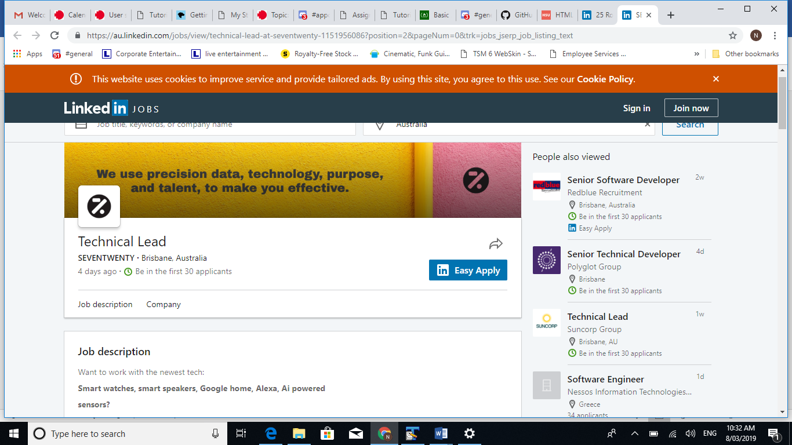

The position - Technical Lead @ Seventwenty - is a diverse role requiring a creative person possessing the ability to think outside the box with extensive experience in many different technologies and platforms. The appeal of this role for Nathan is in that it is innovation and allows for development of never before seen applications of technology. Nathan would find this job very attractive due to the apparent diverse range of technologies being developed for and integrated with. Although not fluent in much in the way of programming, with his minimal knowledge, he can certainly see an easy path to meeting the criteria required. During his time at RMIT, Nathan will endeavor to dig deeply into the world of computer science and software development, not just to achieve a pass but to understand it as if it were a second language. Nathan has a proven history in relation to "dev wisdom" as in his previous careers he has mastered logic in terms of weighing up pros and cons eg: fast vs efficient or effective vs affordable. Nathan believes with the appropriate training and experience with the prerequisite skills he could excel in a role such as this as he has a very creative and logical mind while possessing very strong problem solving skills employed in his career in electronics.
